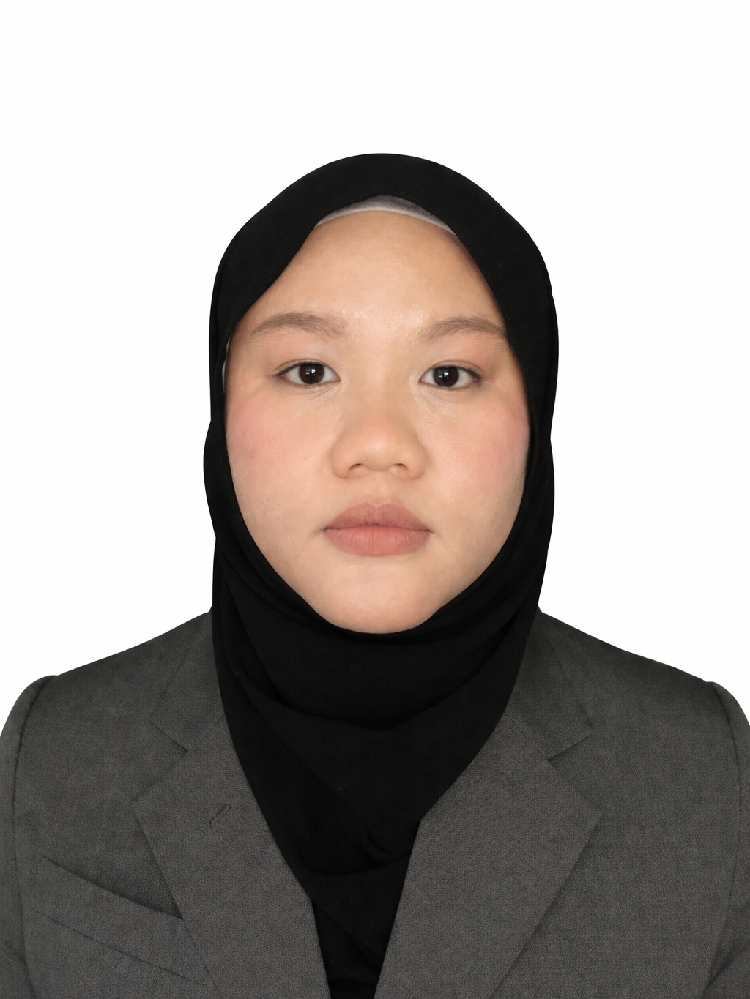

Meeting minutes
Meeting minutes prepared for the Centre for Research and Innovation, UMS.
- Minute taking
- Professional writing
- Documentation
Confidential work — preview not publicly available.
A little old school. A little personal.
Software Engineering · Research · STEM Education
I’m a Research Assistant at Universiti Malaysia Sabah with a background in software engineering. I bring curiosity and care to the ways we build, research and learn.
Curious about technology. Inspired by research. Happy to teach.

The person behind the desktop
I’m a Research Assistant at the Centre for Research and Innovation, Universiti Malaysia Sabah (UMS). My background in software engineering shapes how I approach problems, explore ideas and support research.
I completed my degree, with graduation scheduled for November 2026. I earned a Bachelor of Computer Science with Honours in Software Engineering with a CGPA of 3.61. I’m now preparing to pursue a Master of Computer Science by Research at UMS.
My interests bring together technology, research and teaching. Through STEM outreach with U-Science, UMS, and my work as a STEM Instructor at Smart Native Maker, I’ve enjoyed helping students learn with tools such as Scratch, mBot and Arduino. I value opportunities to keep learning and share what I know.
A few things I’ve worked on
Writing, software and data — three parts of my work, brought together on one desktop.
Meeting minutes prepared for the Centre for Research and Innovation, UMS.
Confidential work — preview not publicly available.
Emails and official letters prepared for Living Labs activities at the Centre for Research and Innovation.
Confidential work — preview not publicly available.
A memo, email and company primer produced during the Khazanah Nasional K-Youth programme.
Internal documents are confidential. K-Youth writing samples are not displayed.


Featured project · Final-year project
My final-year project for the Software Engineering degree at Universiti Malaysia Sabah.


A campsite booking website developed as a group assignment for Web Engineering.


My personal digital portfolio, created during the Khazanah Nasional K-Youth programme, brings together my background and selected work. This version uses a retro desktop design.
Data entry, cleaning and analysis for KRA 3 in my Research Assistant role at the Centre for Research and Innovation.
Confidential work — preview not publicly available.
Data entry, cleaning and analysis for MyRA in my Research Assistant role at the Centre for Research and Innovation.
Confidential work — preview not publicly available.
Descriptions only · Research data is not shared.
Current
Centre for Research and Innovation, UMS
Faculty of Computing and Informatics, UMS
16 March – 28 August 2026
Previous role
Smart Native Maker
U-Science, UMS
April – August 2025
First place
First place · Science Category
Silver Medal & Top 5 Finalist


Gold Medal
Let’s connect
Interested in software, research or STEM education? I’d be happy to hear from you.
Kota Kinabalu, Sabah